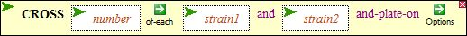
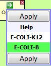
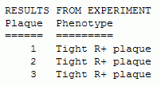

This function (see A) enables you to do virtual crosses between two strains
of bacteriophage T4. You'd want to do use this function to separate two mutations in one
mutant strain by crossing that strain with a wild-type strain. You'd also want to use it
to contruct a new strain composed of elements from two parental strains.
The number box should contain the number of phage to be mutagenized. How to choose that number is discussed elsewhere.
|
Screenshot A

|
To select the phage strain to be mutagenized, click the strain1 entry box (the box will turn white and become highlighted with red dots; see B), and select a strain from the VARIABLES menu (the strains you see may differ from those in the figure shown at the right).
Do the same to enter the second strain in the strain2 entry box.
|
Screenshot B
|
To select the E.coli strain to be infected, mouse over the green arrow Option icon, select either strain, and then click Apply (see C).
When all three boxes have been filled in and an E.coli strain has been selected, then execute the function by double clicking CROSS.
|
Screenshot C

|
Output
If no plaques are produced by the infection, you'll see a message at the bottom of the screen (see D). Otherwise a popup window will appear listing the phenotypes of all the plaques (see E).
|
Screenshot D and
Screenshot E


|